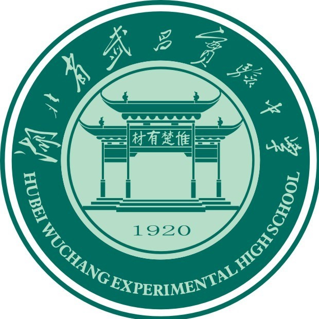

Fangzhou WANG (汪方舟)
Ph.D. Candidate
Department of Computer Science and
Engineering
The Chinese University of Hong Kong
Email: wfz0755 AT gmail.com


Resume/CV (as of Nov. 2021)
Biography
I am a fourth-year Ph.D. candidate at The Chinese University of Hong Kong, advised by Prof. Evangeline F. Y. Young. Previously, I obtained my bachelor's degree in Computer Science from City University of Hong Kong in 2019. My research interests lie primarily in the area of VLSI Physical design, to be more specific, floorplanning, placement, and routing. I am also interested in tackling problems using SAT and machine learning approaches.
Publications
( )
)
Journal Paper
-
[J2] Bentian Jiang*, Jingsong Chen*, Jinwei Liu, Lixin Liu, Fangzhou Wang, Xiaopeng Zhang, and Evangeline F.Y. Young, "CU.POKer: Placing DNNs on WSE with Optimal Kernel Sizing and Efficient Protocol Optimization", accepted by IEEE Transactions on Computer-Aided Design of Integrated Circuits and Systems (TCAD).
-
[J1] Itai Feigenbaum, Minming Li, Jay Sethuraman, Fangzhou Wang, Shaokun Zou, "Strategic facility location problems with linear single-dipped and single-peaked preferences", Autonomous Agents and Multi-Agent Systems 34, no. 2 (2020): 1-47.
Conference Papers
-
[C7] Shixiong Kai, Chak-Wa Pui, Fangzhou Wang, Jiang Shougao, Bin Wang, Yu Huang and Jianye Hao, "TOFU: A Two-Step Floorplan Refinement Framework for Whitespace Reduction'', IEEE/ACM Proceedings Design, Automation and Test in Europe (DATE), Antwerp, Belgium, April 17 - 19, 2023.
-
[C6] Fangzhou Wang, Qijing Wang, Bangqi Fu, Shui Jiang, Xiaopeng Zhang, Lilas Alrahis, Ozgur Sinanoglu, Johann Knechtel, Tsung-Yi Ho, Evangeline F.Y. Young, "Security Closure of IC Layouts Against Hardware Trojans", ACM International Symposium on Physical Design (ISPD), Virtual Conference, March 26-29, 2023. [preprint]
-
[C5] Fangzhou Wang, Jinwei Liu, Evangeline F.Y. Young, "FastPass: Fast Pin Access Analysis with Incremental SAT Solving", ACM International Symposium on Physical Design (ISPD), Virtual Conference, March 26-29, 2023. [preprint]
-
[C4] Xinshi Zang, Fangzhou Wang, Jinwei Liu, Martin D.F. Wong, "ATLAS: A Two-Level Layer-Aware Scheme for Routing with Cell Movement", The 41th IEEE/ACM International Conference on Computer-Aided Design (ICCAD), San Diego, CA, USA, Oct. 30 - Nov. 4, 2022. [preprint]
-
[C3] Fangzhou Wang, Lixin Liu, Jingsong Chen, Jinwei Liu, Xinshi Zang, Martin D.F. Wong, "Starfish: An Efficient P&R Co-Optimization Engine with A*-based Partial Rerouting", The 40th IEEE/ACM International Conference on Computer-Aided Design (ICCAD), Munich, Germany, Nov. 1-4, 2021. [preprint]
-
[C2] Bentian Jiang*, Jingsong Chen*, Jinwei Liu, Lixin Liu, Fangzhou Wang, Xiaopeng Zhang, Evangeline F.Y. Young, "CU. POKer: Placing DNNs on Wafer-Scale Al Accelerator with Optimal Kernel Sizing", The 39th IEEE/ACM International Conference on Computer-Aided Design (ICCAD), San Diego, CA, USA, Nov. 2-5, 2020.
-
[C1] Jinwei Liu, Chak-Wa Pui, Fangzhou Wang, Evangeline F.Y. Young, "CUGR: Detailed-Routability-Driven 3D Global Routing with Probabilistic Resource Model", ACM/IEEE Design Automation Conference (DAC), San Francisco, CA, USA, Jul. 19-23, 2020.
Selected Honors & Awards
-
2nd Place Award in ICCAD 2022 Contest on 'Microarchitecture Design Space Exploration', 2022
-
3rd Place Award in ISPD 2022 Contest on 'Security Closure of Physical Layouts ', 2022
-
The Hong Kong, China - Asia-Pacific Economic Cooperation Scholarship, 2021
-
2nd Place Award in ICCAD 2021 Contest on 'Routing with Cell Movement Advanced', 2021
-
1st Place Award in ICCAD 2020 Contest on 'Routing with Cell Movement', 2020
-
1st Place Award in ISPD 2020 Contest on 'Wafer-Scale Deep Learning Accelerator Placement ', 2020
-
1st Place Award in ICCAD 2019 Contest on 'LEF/DEF Based Open-Source Global Router', 2019
-
Full Postgraduate Studentship at CUHK, 2019 - Current
-
The Department of Computer Science Outstanding Student Scholarship, 2019
-
The College of Engineering Dean’s Scholarship (no more than 5 out of 3000+), 2019
-
HKSAR Government Scholarship Fund – Talent Development Scholarship, 2019 - 2021
-
Bronze Medal in the 2018 ACM-ICPC Asia Regional (Xuzhou), 2018
-
Silver Award in the 2018 ACM-ICPC China Multi-Provincial Collegiate Programming Contest, 2018
-
Country Level Third Prize in 2017 TCS CodeVita Coding Competition, 2018
-
CityU Full Tuition Scholarship, 2015 - 2019
-
Dean′s List of College of Engineering of CityU, 2015 - 2019
Experiences
Software Engineering Intern, @Cadence Design System
-
Sep. 2022 - Present, Austin, TX, USA
Research Intern, @Huawei Noah’s Ark Lab
-
Sep. 2021 - Jan. 2022, HKSAR
Full-time Research Assistant @CityU
-
Supervised by Prof. Henry XU
-
On machine learning system
-
June 2018 - Aug. 2018, HKSAR
Assistant Analyst Programmer @HKEx
-
On market data processing
-
Aug. 2017 - May 2018, HKSAR
Tools
-
CUGR [C1]
Reviewer / External Reviewer
-
ACM/IEEE Design Automation Conference (DAC)
-
Integration, the VLSI Journal
-
IEEE/ACM International Conference on Computer-Aided Design (ICCAD)
Teaching
-
2020-2021 Fall ENGG1110 Problem Solving By Programming @ CUHK
-
2019-2020 Spring CSCI1520 Computer Principles and C++ Programming @ CUHK
-
2019-2020 Fall CSCI1120A Introduction to Computing Using C++ @ CUHK
-
2018-2019 Fall CS3391 Advanced Programming @ CityU
-
2017-2018 Fall CS3334 Data Structure @ CityU
Visitors
